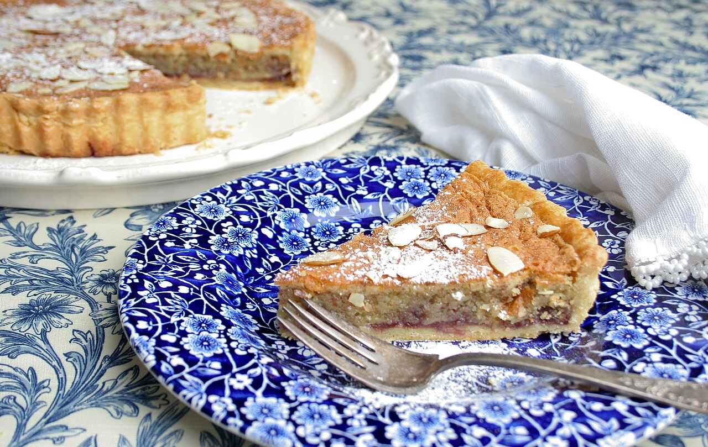

Bakewell Tart

Description
The Bakewell Tart needs a bit of time, but is delicious with a cup of tea or coffee. Perfect to make for when you have friends over!
Ingredients
For the shortcrust pastry:
- 175g plain flour
- 100g butter
- 2–3 tbsp cold water
For the filling:
- 1 tbsp raspberry jam
- 125g butter
- 125g caster sugar
- 125g ground almonds
- 1 free-range egg, beaten
- 1/2 tbsp almond extract
- 50g flaked almonds
For the icing:
- 80g icing sugar
- 2 1/2tbsp lemon juice
Steps
- To make the pastry, measure the flour into a bowl and rub in the butter with your fingertips until the mixture resembles fine breadcrumbs. Add the water, mixing to form a soft dough.
- Roll out the dough on a lightly floured work surface and use to line a 20cm flan tin. Leave in the fridge to chill for 30 minutes.
- Preheat the oven to 200° C.
- Line the pastry case with foil and fill with baking beans. Bake blind for about 15 minutes, then remove the beans and foil and cook for a further five minutes to dry out the base.
- For the filling, spread the base of the flan generously with raspberry jam.
- Melt the butter in a pan, take off the heat and then stir in the sugar. Add ground almonds, egg, and almond extract. Pour into the flan tin and sprinkle over the flaked almonds.
- Bake for about 35 minutes. If the almonds seem to be browning too quickly, cover the tart loosely with foil to prevent them burning.
- Meanwhile, sift the icing sugar into a bowl. Stir in lemon juice and transfer to a piping bag.
- Once you have removed the tart from the oven, pipe the icing over the top, giving an informal zig zag effect.
Home